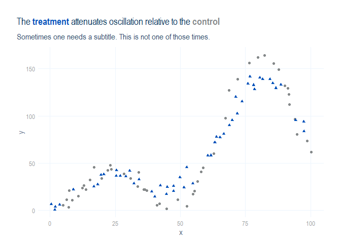

The goal of kubrand is to simplify theming a ggplot2 graph using KU branded colors.
Installation
The development version of the package is available from GitHub with:
# install.packages("remotes")
remotes::install_github("bvancilku/kubrand")Example
Make a plot using the KU-branded ggplot2 theme:
library(dplyr)
#> Warning: package 'dplyr' was built under R version 4.0.5
#>
#> Attaching package: 'dplyr'
#> The following objects are masked from 'package:stats':
#>
#> filter, lag
#> The following objects are masked from 'package:base':
#>
#> intersect, setdiff, setequal, union
library(ggplot2)
library(magrittr)
#> Warning: package 'magrittr' was built under R version 4.0.5
library(purrr)
#> Warning: package 'purrr' was built under R version 4.0.5
#>
#> Attaching package: 'purrr'
#> The following object is masked from 'package:magrittr':
#>
#> set_names
library(kubrand)
#> Configuring {kubrand}
base::set.seed(2021L + 07L + 05L)
dataset <- tibble::tibble(
val_x_true = base::seq(1, 100, by = 1)
) %>%
dplyr::mutate(
val_x_measured = val_x_true + stats::rnorm(dplyr::n(), mean = 0, sd = 0.6),
ind_treatment = purrr::rbernoulli(dplyr::n()),
val_y_true = val_x_true * (1.1 + (1 - 0.4 * ind_treatment) * base::sin(val_x_true / 10)),
val_y_measured = val_y_true + stats::rnorm(dplyr::n(), mean = 0, sd = 5),
cat_treatment = base::factor(dplyr::if_else(ind_treatment, "treatment", "control"), levels = c("control", "treatment"))
)
categorical_palette <- kubrand::ku_pal("cat2_int", reverse = TRUE)(2L)
dataset %>%
ggplot2::ggplot() +
ggplot2::aes(x = val_x_measured, y = val_y_measured, color = cat_treatment, shape = cat_treatment) +
ggplot2::geom_point(show.legend = FALSE) +
ggplot2::xlab("x") +
ggplot2::ylab("y") +
kubrand::scale_color_ku("cat2_int", reverse = TRUE) +
ggplot2::ggtitle(
label = glue::glue("The **{kubrand::color_text(categorical_palette[[2]], 'treatment')}** attenuates oscillation relative to the **{kubrand::color_text(categorical_palette[[1]], 'control')}**"),
subtitle = "Sometimes one needs a subtitle. This is not one of those times."
) +
theme_ku()
Code of conduct
Please note that the kubrand project is released with a Contributor Code of Conduct. By contributing to this project, you agree to abide by its terms.
Related work
This package relies on the hard work of other package maintainers as well as many good tutorials and articles. Please allow us to commend them here.
Packages
- base R’s {grDevices}. Much work has recently gone into
palette.colors()/palette.pals()andhcl.colors()/hcl.pals() - bayesplot
- biscale
- colorspace
- dplyr
- extrafont
- farver
- ggplot2
- ggtext
- glue
- magrittr
- methods
- paletteer
- pals
- patchwork
- purrr
- ragg provides more modern graphics device replacements that work with {systemfonts}
- rcartocolor
- RColorBrewer
- rlang
- scales
- scico
- stringr
- svglite
- systemfonts allows one to specify font variants with specific font features; can be used in conjunction with {ragg}
- unikn unikn GitHub repo is a university color palette with guidance on creating one’s own palette.
- viridis